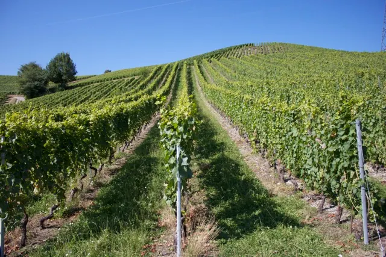
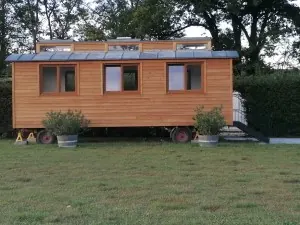
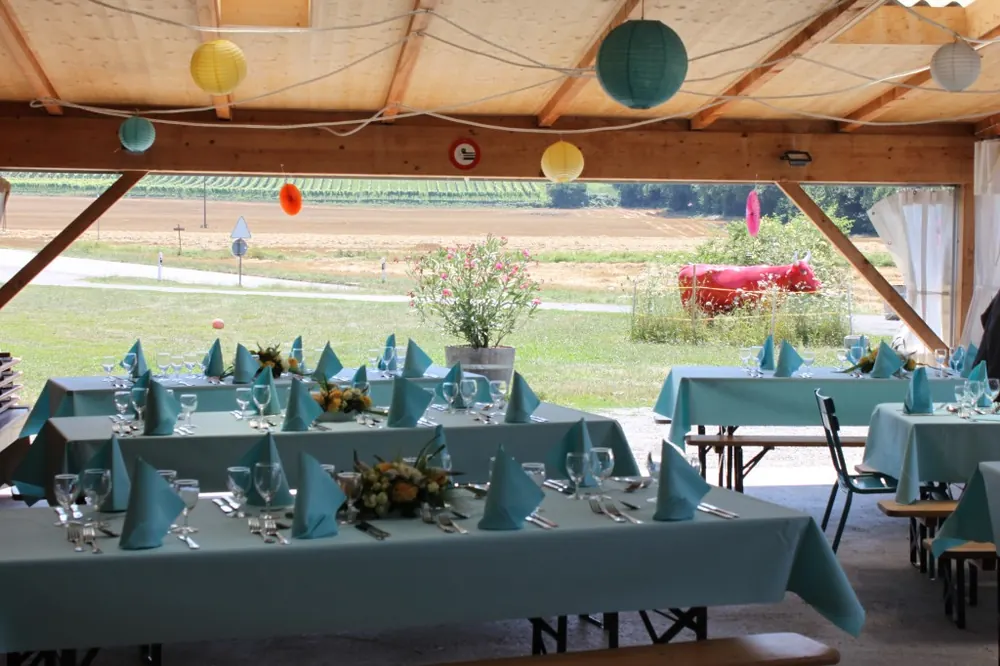
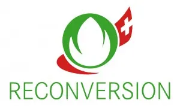

Dix hectares entre trois communes
Vigneron à Avully, au bord du Rhône. Dégustation au caveau, fondue dans la roulotte, un espace couvert à louer.

Le domaine
Dix hectares répartis sur trois communes, aux sols et aux climats très différents, pour treize cépages cultivés dans le respect de l’environnement (production intégrée). Depuis 2021, le domaine est en reconversion biologique.
En automne, la vendange est sélectionnée soigneusement à la vigne et récoltée à la main par une équipe de vendangeurs. Les vins sont vinifiés pour obtenir des crus fins et authentiques.
La cave, construite en 1990 par Laurent et Lili Dugerdil, se trouve en bordure du Rhône, à la limite de la rive droite et de la rive gauche.
Le caveau
Une dégustation au domaine, sur place. Les heures d’ouverture de la semaine :
- Lun.–mer.sur rendez-vous
- Jeu.–ven.16h30 – 18h30
- Samedi9h30 – 12h

La roulotte à fondue
De mi-octobre à mi-avril, des soirées (ou des midis) fondue dans une roulotte fraîchement rénovée et lumineuse, avec vue sur la campagne. La table est dressée à votre arrivée : il ne reste qu’à chauffer la fondue en buvant l’apéritif avec les vins du domaine.
- Fondue, pain, viande séchée, coupette de fruit
- Thé, café, eau gazeuse et location du lieu
- Vin non compris, exclusivement du domaine
Les vins
Tous les vins sont en appellation d’origine contrôlée « Genève ».
Blancs
- Chasselas
- Riesling & Sylvaner
- Pinot Blanc
- Pinot Gris
- Chardonnay
- Sauvignon blanc
Rosé et rouges
- Rosé de Gamay
- Gamay
- Pinot Noir
- Gamaret
- Merlot
- Cabernet Sauvignon
- Le Camerlot
- L’Esprit de Genève
Mousseux et doux
- La Barjak
- Le Gridou
Livraison sur Genève dès 6 bouteilles. Pour commander, écrivez à la-printaniere@bluewin.ch ou appelez le 022 756 25 22.

Un espace couvert à louer
De mai à début septembre, un emplacement couvert pour vos apéritifs de mariage, anniversaires, grillades ou barbecues d’entreprise.
- Environ 50 places assises, parking à disposition
- Vins exclusivement du domaine, 24 bouteilles minimum
Ceux qui font le vin
Le vignoble est tenu depuis plusieurs générations par une branche de la famille Dugerdil. La relève est assurée par Céline Dugerdil et son compagnon Frédérik Serdaly, tous deux de formation caviste. José Vazquez, chef de culture, suit la vigne tout au long de l’année.

Le domaine est en reconversion biologique depuis 2021.Nous trouver
Domaine de la PrintanièreRoute d’Avully 104
1237 Avully 022 756 25 22
la-printaniere@bluewin.ch